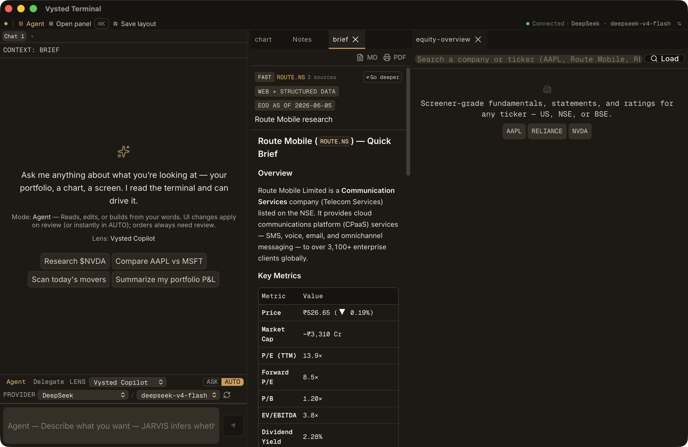
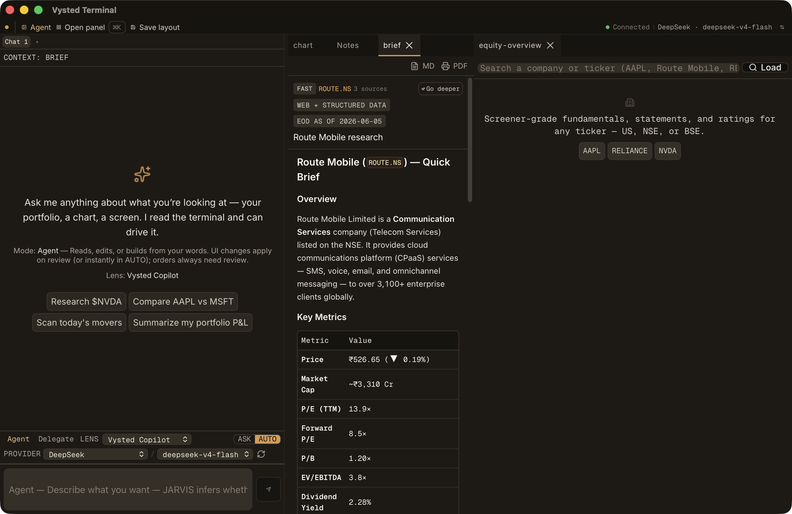

Each app surface beside the reference it targets (Perplexity home + Cursor). Captured on the real running Tauri app via the bridge-independent Quartz path, after the R4 experience-layer rebuild. The design target: warm near-black, a single restrained amber accent, no glow, three contrast tiers, clean sans for prose/chrome with mono kept for numeric data.

Warm near-black canvas, centered prompt, suggestion chips below the composer, one restrained amber accent. Prose + chrome render in clean sans (Inter); numeric data keeps the mono face.


Chat column left, content panel right (a research brief). Brief prose is sans; the Key Metrics table stays mono + tabular. Source/depth chips and the "EOD AS OF" session badge sit quiet; the amber appears only on the active markers.


A centered modal over a dimmed canvas, grouped results (Actions / Panels), dim descriptions under each item. Typing "notes" ranks the Notes action + panel at the top — no wall of agents.
| Check | Result | Evidence |
|---|---|---|
| Warm canvas + amber accent + zero glow | VERIFIED | live computed style: body rgb(17,15,12), --accent-rgb 216 154 78, background-image: none |
| ⌘K ranks "notes" correctly | VERIFIED | top items: Open Notes (action), Notes (panel); zero agents in results |
| Notes export MD / PNG / PDF | VERIFIED | exports/notes/general.md (UTF-8), general.png (PNG 600×1308), general.pdf (PDF, 2 pages) |
| Brief export MD / PDF | VERIFIED | exports/research/route-ns.md (brief markdown), route-ns.pdf (PDF, 6 pages) |
| Screener cold-path backoff | VERIFIED | live log: throttled cycles 1→2→3 backing off 76s→136s→271s (no longer hammering every 40s) |
| Chrome/prose sans, data mono | VERIFIED | live: body font "Inter", empty-state prose "Inter"; metric tables keep explicit mono+tabular |
Two blind reviewers (given only the references + app shots, no project context):
Honest synthesis: the app now shares the references' visual family on every fundamental — warm flat near-black, clean proportional sans for prose/chrome with mono fenced to numeric data, a disciplined 2–3-tier contrast, a single restrained accent, zero glow primitives, and a composer-led empty state with suggestion chips. It is not pixel-identical to Perplexity/Cursor, nor should it be: it is a denser, amber-branded finance terminal. The two residual reviewer deltas (accent temperature, chrome density) are a brand decision and the product's nature, not regressions.